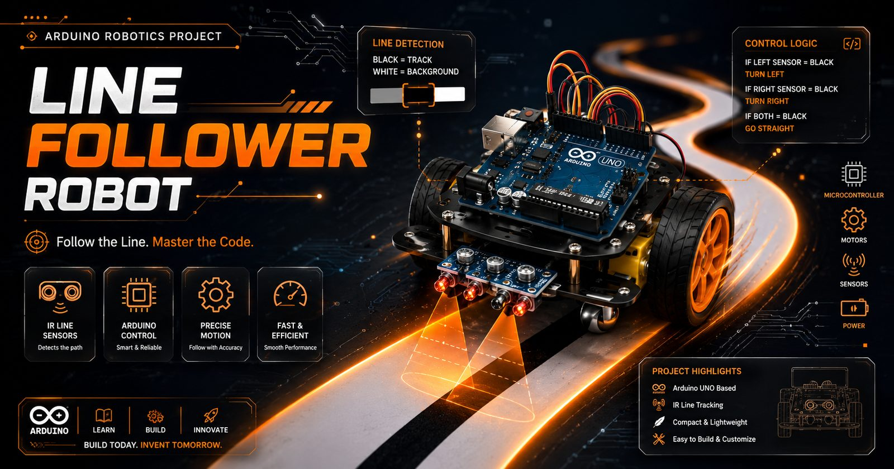

Project documentation — Index 35
Line Follower Robot
An autonomous robot that reads a line with IR sensors and holds it through corners — Arduino, motor driver, and proportional control tuned until the tracking stopped wobbling.

Project documentation — Index 35
An autonomous robot that reads a line with IR sensors and holds it through corners — Arduino, motor driver, and proportional control tuned until the tracking stopped wobbling.

The line follower is the "hello world" of robotics — and still the clearest lesson in closed-loop control you can hold in your hand. This build uses an IR sensor array to detect the path, an Arduino Uno to process it, and a motor driver to steer two DC motors along the line.
Bang-bang control (turn hard left / hard right) makes robots zig-zag. The tracking needed a proportional response: the further the line sits from the sensor array's center, the harder the correction — smooth and fast instead of twitchy.
Main microcontroller running the control loop.
Line detection under the chassis.
Differential steering for movement.
Error-scaled corrections for smooth tracking.